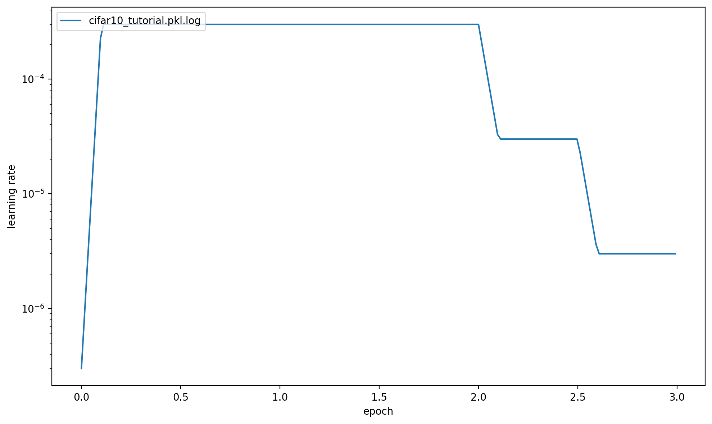
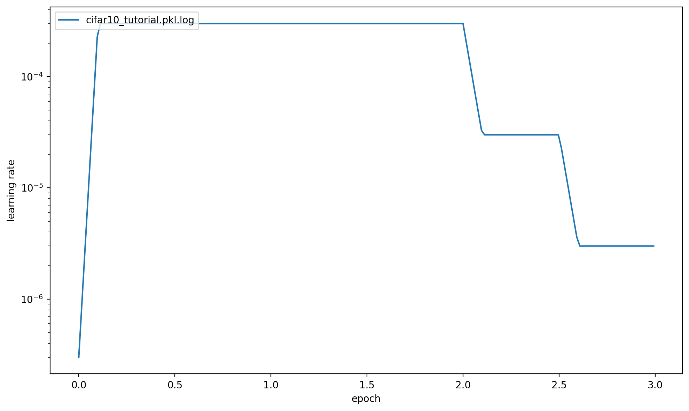

Cifar10¶
This page gives a quick introduction to OpenPifPaf’s Cifar10 plugin that is part of openpifpaf.plugins.
It demonstrates the plugin architecture.
There already is a nice dataset for CIFAR10 in torchvision and a related PyTorch tutorial.
The plugin adds a DataModule that uses this dataset.
Let’s start with them setup for this notebook and registering all available OpenPifPaf plugins:
print(openpifpaf.plugin.REGISTERED.keys())
dict_keys(['openpifpaf.plugins.animalpose', 'openpifpaf.plugins.apollocar3d', 'openpifpaf.plugins.cifar10', 'openpifpaf.plugins.coco', 'openpifpaf.plugins.crowdpose', 'openpifpaf.plugins.nuscenes', 'openpifpaf.plugins.posetrack', 'openpifpaf.plugins.wholebody'])
Next, we configure and instantiate the Cifar10 datamodule and look at the configured head metas:
# configure
openpifpaf.plugins.cifar10.datamodule.Cifar10.debug = True
openpifpaf.plugins.cifar10.datamodule.Cifar10.batch_size = 1
# instantiate and inspect
datamodule = openpifpaf.plugins.cifar10.datamodule.Cifar10()
datamodule.set_loader_workers(0) # no multi-processing to see debug outputs in main thread
datamodule.head_metas
[CifDet(name='cifdet', dataset='cifar10', head_index=None, base_stride=None, upsample_stride=1, categories=('plane', 'car', 'bird', 'cat', 'deer', 'dog', 'frog', 'horse', 'ship', 'truck'), training_weights=None)]
We see here that CIFAR10 is being treated as a detection dataset (CifDet) and has 10 categories.
To create a network, we use the factory() function that takes the name of the base network cifar10net and the list of head metas.
net = openpifpaf.network.Factory(base_name='cifar10net').factory(head_metas=datamodule.head_metas)
We can inspect the training data that is returned from datamodule.train_loader():
# configure visualization
openpifpaf.visualizer.Base.set_all_indices(['cifdet:9:regression']) # category 9 = truck
# Create a wrapper for a data loader that iterates over a set of matplotlib axes.
# The only purpose is to set a different matplotlib axis before each call to
# retrieve the next image from the data_loader so that it produces multiple
# debug images in one canvas side-by-side.
def loop_over_axes(axes, data_loader):
previous_common_ax = openpifpaf.visualizer.Base.common_ax
train_loader_iter = iter(data_loader)
for ax in axes.reshape(-1):
openpifpaf.visualizer.Base.common_ax = ax
yield next(train_loader_iter, None)
openpifpaf.visualizer.Base.common_ax = previous_common_ax
# create a canvas and loop over the first few entries in the training data
with openpifpaf.show.canvas(ncols=6, nrows=3, figsize=(10, 5)) as axs:
for images, targets, meta in loop_over_axes(axs, datamodule.train_loader()):
pass

Training¶
We train a very small network, cifar10net, for only one epoch. Afterwards, we will investigate its predictions.
%%bash
python -m openpifpaf.train \
--dataset=cifar10 --basenet=cifar10net --log-interval=50 \
--epochs=3 --lr=0.0003 --momentum=0.95 --batch-size=16 \
--lr-warm-up-epochs=0.1 --lr-decay 2.0 2.5 --lr-decay-epochs=0.1 \
--loader-workers=2 --output=cifar10_tutorial.pkl
INFO:__main__:neural network device: cpu (CUDA available: False, count: 0)
INFO:openpifpaf.network.basenetworks:cifar10net: stride = 16, output features = 128
INFO:openpifpaf.network.losses.multi_head:multihead loss: ['cifar10.cifdet.c', 'cifar10.cifdet.vec', 'cifar10.cifdet.scales'], [1.0, 1.0, 1.0]
INFO:openpifpaf.logger:{'type': 'process', 'argv': ['/opt/hostedtoolcache/Python/3.8.12/x64/lib/python3.8/site-packages/openpifpaf/train.py', '--dataset=cifar10', '--basenet=cifar10net', '--log-interval=50', '--epochs=3', '--lr=0.0003', '--momentum=0.95', '--batch-size=16', '--lr-warm-up-epochs=0.1', '--lr-decay', '2.0', '2.5', '--lr-decay-epochs=0.1', '--loader-workers=2', '--output=cifar10_tutorial.pkl'], 'args': {'output': 'cifar10_tutorial.pkl', 'disable_cuda': False, 'ddp': False, 'local_rank': None, 'sync_batchnorm': True, 'quiet': False, 'debug': False, 'log_stats': False, 'swin_drop_path_rate': 0.2, 'swin_input_upsample': False, 'swin_use_fpn': False, 'swin_fpn_out_channels': None, 'swin_fpn_level': 3, 'swin_pretrained': True, 'xcit_out_channels': None, 'xcit_out_maxpool': False, 'xcit_pretrained': True, 'shufflenetv2k_input_conv2_stride': 0, 'shufflenetv2k_input_conv2_outchannels': None, 'shufflenetv2k_stage4_dilation': 1, 'shufflenetv2k_kernel': 5, 'shufflenetv2k_conv5_as_stage': False, 'shufflenetv2k_instance_norm': False, 'shufflenetv2k_group_norm': False, 'shufflenetv2k_leaky_relu': False, 'mobilenetv2_pretrained': True, 'squeezenet_pretrained': True, 'shufflenetv2_pretrained': True, 'mobilenetv3_pretrained': True, 'resnet_pretrained': True, 'resnet_pool0_stride': 0, 'resnet_input_conv_stride': 2, 'resnet_input_conv2_stride': 0, 'resnet_block5_dilation': 1, 'resnet_remove_last_block': False, 'cf4_dropout': 0.0, 'cf4_inplace_ops': True, 'checkpoint': None, 'basenet': 'cifar10net', 'cross_talk': 0.0, 'download_progress': True, 'head_consolidation': 'filter_and_extend', 'lambdas': None, 'component_lambdas': None, 'auto_tune_mtl': False, 'auto_tune_mtl_variance': False, 'task_sparsity_weight': 0.0, 'soft_clamp': 5.0, 'loss_prescale': 1.0, 'regression_loss': 'laplace', 'bce_total_soft_clamp': None, 'r_smooth': 0.0, 'b_scale': 1.0, 'scale_log': False, 'scale_soft_clamp': 5.0, 'background_weight': 1.0, 'focal_alpha': 0.5, 'focal_gamma': 1.0, 'focal_detach': False, 'focal_clamp': True, 'bce_min': 0.0, 'bce_soft_clamp': 5.0, 'bce_background_clamp': -15.0, 'laplace_soft_clamp': 5.0, 'epochs': 3, 'train_batches': None, 'val_batches': None, 'clip_grad_norm': 0.0, 'clip_grad_value': 0.0, 'log_interval': 50, 'val_interval': 1, 'stride_apply': 1, 'fix_batch_norm': False, 'ema': 0.01, 'profile': None, 'cif_side_length': 4, 'caf_min_size': 3, 'caf_fixed_size': False, 'caf_aspect_ratio': 0.0, 'encoder_suppress_selfhidden': True, 'encoder_suppress_invisible': False, 'encoder_suppress_collision': False, 'momentum': 0.95, 'beta2': 0.999, 'adam_eps': 1e-06, 'nesterov': True, 'weight_decay': 0.0, 'adam': False, 'amsgrad': False, 'lr': 0.0003, 'lr_decay': [2.0, 2.5], 'lr_decay_factor': 0.1, 'lr_decay_epochs': 0.1, 'lr_warm_up_start_epoch': 0, 'lr_warm_up_epochs': 0.1, 'lr_warm_up_factor': 0.001, 'lr_warm_restarts': [], 'lr_warm_restart_duration': 0.5, 'dataset': 'cifar10', 'loader_workers': 2, 'batch_size': 16, 'dataset_weights': None, 'animal_train_annotations': 'data-animalpose/annotations/animal_keypoints_20_train.json', 'animal_val_annotations': 'data-animalpose/annotations/animal_keypoints_20_val.json', 'animal_train_image_dir': 'data-animalpose/images/train/', 'animal_val_image_dir': 'data-animalpose/images/val/', 'animal_square_edge': 513, 'animal_extended_scale': False, 'animal_orientation_invariant': 0.0, 'animal_blur': 0.0, 'animal_augmentation': True, 'animal_rescale_images': 1.0, 'animal_upsample': 1, 'animal_min_kp_anns': 1, 'animal_bmin': 1, 'animal_eval_test2017': False, 'animal_eval_testdev2017': False, 'animal_eval_annotation_filter': True, 'animal_eval_long_edge': 0, 'animal_eval_extended_scale': False, 'animal_eval_orientation_invariant': 0.0, 'apollo_train_annotations': 'data-apollocar3d/annotations/apollo_keypoints_66_train.json', 'apollo_val_annotations': 'data-apollocar3d/annotations/apollo_keypoints_66_val.json', 'apollo_train_image_dir': 'data-apollocar3d/images/train/', 'apollo_val_image_dir': 'data-apollocar3d/images/val/', 'apollo_square_edge': 513, 'apollo_extended_scale': False, 'apollo_orientation_invariant': 0.0, 'apollo_blur': 0.0, 'apollo_augmentation': True, 'apollo_rescale_images': 1.0, 'apollo_upsample': 1, 'apollo_min_kp_anns': 1, 'apollo_bmin': 1, 'apollo_apply_local_centrality': False, 'apollo_eval_annotation_filter': True, 'apollo_eval_long_edge': 0, 'apollo_eval_extended_scale': False, 'apollo_eval_orientation_invariant': 0.0, 'apollo_use_24_kps': False, 'cifar10_root_dir': 'data-cifar10/', 'cifar10_download': False, 'cocodet_train_annotations': 'data-mscoco/annotations/instances_train2017.json', 'cocodet_val_annotations': 'data-mscoco/annotations/instances_val2017.json', 'cocodet_train_image_dir': 'data-mscoco/images/train2017/', 'cocodet_val_image_dir': 'data-mscoco/images/val2017/', 'cocodet_square_edge': 513, 'cocodet_extended_scale': False, 'cocodet_orientation_invariant': 0.0, 'cocodet_blur': 0.0, 'cocodet_augmentation': True, 'cocodet_rescale_images': 1.0, 'cocodet_upsample': 1, 'cocokp_train_annotations': 'data-mscoco/annotations/person_keypoints_train2017.json', 'cocokp_val_annotations': 'data-mscoco/annotations/person_keypoints_val2017.json', 'cocokp_train_image_dir': 'data-mscoco/images/train2017/', 'cocokp_val_image_dir': 'data-mscoco/images/val2017/', 'cocokp_square_edge': 385, 'cocokp_with_dense': False, 'cocokp_extended_scale': False, 'cocokp_orientation_invariant': 0.0, 'cocokp_blur': 0.0, 'cocokp_augmentation': True, 'cocokp_rescale_images': 1.0, 'cocokp_upsample': 1, 'cocokp_min_kp_anns': 1, 'cocokp_bmin': 0.1, 'cocokp_eval_test2017': False, 'cocokp_eval_testdev2017': False, 'coco_eval_annotation_filter': True, 'coco_eval_long_edge': 641, 'coco_eval_extended_scale': False, 'coco_eval_orientation_invariant': 0.0, 'crowdpose_train_annotations': 'data-crowdpose/json/crowdpose_train.json', 'crowdpose_val_annotations': 'data-crowdpose/json/crowdpose_val.json', 'crowdpose_image_dir': 'data-crowdpose/images/', 'crowdpose_square_edge': 385, 'crowdpose_extended_scale': False, 'crowdpose_orientation_invariant': 0.0, 'crowdpose_augmentation': True, 'crowdpose_rescale_images': 1.0, 'crowdpose_upsample': 1, 'crowdpose_min_kp_anns': 1, 'crowdpose_eval_test': False, 'crowdpose_eval_long_edge': 641, 'crowdpose_eval_extended_scale': False, 'crowdpose_eval_orientation_invariant': 0.0, 'crowdpose_index': None, 'nuscenes_train_annotations': '../../../NuScenes/mscoco_style_annotations/nuimages_v1.0-train.json', 'nuscenes_val_annotations': '../../../NuScenes/mscoco_style_annotations/nuimages_v1.0-val.json', 'nuscenes_train_image_dir': '../../../NuScenes/nuimages-v1.0-all-samples', 'nuscenes_val_image_dir': '../../../NuScenes/nuimages-v1.0-all-samples', 'nuscenes_square_edge': 513, 'nuscenes_extended_scale': False, 'nuscenes_orientation_invariant': 0.0, 'nuscenes_blur': 0.0, 'nuscenes_augmentation': True, 'nuscenes_rescale_images': 1.0, 'nuscenes_upsample': 1, 'posetrack2018_train_annotations': 'data-posetrack2018/annotations/train/*.json', 'posetrack2018_val_annotations': 'data-posetrack2018/annotations/val/*.json', 'posetrack2018_eval_annotations': 'data-posetrack2018/annotations/val/*.json', 'posetrack2018_data_root': 'data-posetrack2018', 'posetrack_square_edge': 385, 'posetrack_with_dense': False, 'posetrack_augmentation': True, 'posetrack_rescale_images': 1.0, 'posetrack_upsample': 1, 'posetrack_min_kp_anns': 1, 'posetrack_bmin': 0.1, 'posetrack_sample_pairing': 0.0, 'posetrack_image_augmentations': 0.0, 'posetrack_max_shift': 30.0, 'posetrack_eval_long_edge': 801, 'posetrack_eval_extended_scale': False, 'posetrack_eval_orientation_invariant': 0.0, 'posetrack_ablation_without_tcaf': False, 'posetrack2017_eval_annotations': 'data-posetrack2017/annotations/val/*.json', 'posetrack2017_data_root': 'data-posetrack2017', 'cocokpst_max_shift': 30.0, 'wholebody_train_annotations': 'data-mscoco/annotations/person_keypoints_train2017_wholebody_pifpaf_style.json', 'wholebody_val_annotations': 'data-mscoco/annotations/coco_wholebody_val_v1.0.json', 'wholebody_train_image_dir': 'data-mscoco/images/train2017/', 'wholebody_val_image_dir': 'data-mscoco/images/val2017', 'wholebody_square_edge': 385, 'wholebody_extended_scale': False, 'wholebody_orientation_invariant': 0.0, 'wholebody_blur': 0.0, 'wholebody_augmentation': True, 'wholebody_rescale_images': 1.0, 'wholebody_upsample': 1, 'wholebody_min_kp_anns': 1, 'wholebody_bmin': 1.0, 'wholebody_apply_local_centrality': False, 'wholebody_eval_test2017': False, 'wholebody_eval_testdev2017': False, 'wholebody_eval_annotation_filter': True, 'wholebody_eval_long_edge': 641, 'wholebody_eval_extended_scale': False, 'wholebody_eval_orientation_invariant': 0.0, 'save_all': None, 'show': False, 'image_width': None, 'image_height': None, 'image_dpi_factor': 2.0, 'image_min_dpi': 50.0, 'show_file_extension': 'jpeg', 'textbox_alpha': 0.5, 'text_color': 'white', 'font_size': 8, 'monocolor_connections': False, 'line_width': None, 'skeleton_solid_threshold': 0.5, 'show_box': False, 'white_overlay': False, 'show_joint_scales': False, 'show_joint_confidences': False, 'show_decoding_order': False, 'show_frontier_order': False, 'show_only_decoded_connections': False, 'video_fps': 10, 'video_dpi': 100, 'debug_indices': [], 'device': device(type='cpu'), 'pin_memory': False}, 'version': '0.13.1', 'plugin_versions': {}, 'hostname': 'fv-az269-36'}
INFO:openpifpaf.optimize:SGD optimizer
INFO:openpifpaf.optimize:training batches per epoch = 3125
INFO:openpifpaf.network.trainer:{'type': 'config', 'field_names': ['cifar10.cifdet.c', 'cifar10.cifdet.vec', 'cifar10.cifdet.scales']}
INFO:openpifpaf.network.trainer:model written: cifar10_tutorial.pkl.epoch000
INFO:openpifpaf.network.trainer:{'type': 'train', 'epoch': 0, 'batch': 0, 'n_batches': 3125, 'time': 0.054, 'data_time': 0.079, 'lr': 3e-07, 'loss': 68.237, 'head_losses': [2.061, 66.176, 0.0]}
INFO:openpifpaf.network.trainer:{'type': 'train', 'epoch': 0, 'batch': 50, 'n_batches': 3125, 'time': 0.026, 'data_time': 0.001, 'lr': 9.1e-07, 'loss': 68.37, 'head_losses': [1.992, 66.378, 0.0]}
INFO:openpifpaf.network.trainer:{'type': 'train', 'epoch': 0, 'batch': 100, 'n_batches': 3125, 'time': 0.026, 'data_time': 0.002, 'lr': 2.74e-06, 'loss': 68.309, 'head_losses': [2.03, 66.278, 0.0]}
INFO:openpifpaf.network.trainer:{'type': 'train', 'epoch': 0, 'batch': 150, 'n_batches': 3125, 'time': 0.027, 'data_time': 0.001, 'lr': 8.26e-06, 'loss': 68.053, 'head_losses': [2.003, 66.05, 0.0]}
INFO:openpifpaf.network.trainer:{'type': 'train', 'epoch': 0, 'batch': 200, 'n_batches': 3125, 'time': 0.023, 'data_time': 0.004, 'lr': 2.495e-05, 'loss': 67.45, 'head_losses': [2.083, 65.367, 0.0]}
INFO:openpifpaf.network.trainer:{'type': 'train', 'epoch': 0, 'batch': 250, 'n_batches': 3125, 'time': 0.026, 'data_time': 0.001, 'lr': 7.536e-05, 'loss': 66.056, 'head_losses': [2.134, 63.922, 0.0]}
INFO:openpifpaf.network.trainer:{'type': 'train', 'epoch': 0, 'batch': 300, 'n_batches': 3125, 'time': 0.029, 'data_time': 0.002, 'lr': 0.00022757, 'loss': 55.446, 'head_losses': [8.16, 47.287, 0.0]}
INFO:openpifpaf.network.trainer:{'type': 'train', 'epoch': 0, 'batch': 350, 'n_batches': 3125, 'time': 0.026, 'data_time': 0.002, 'lr': 0.0003, 'loss': 24.124, 'head_losses': [-1.317, 25.441, 0.0]}
INFO:openpifpaf.network.trainer:{'type': 'train', 'epoch': 0, 'batch': 400, 'n_batches': 3125, 'time': 0.024, 'data_time': 0.002, 'lr': 0.0003, 'loss': 8.189, 'head_losses': [-6.323, 14.512, 0.0]}
INFO:openpifpaf.network.trainer:{'type': 'train', 'epoch': 0, 'batch': 450, 'n_batches': 3125, 'time': 0.029, 'data_time': 0.002, 'lr': 0.0003, 'loss': -2.698, 'head_losses': [-8.092, 5.394, 0.0]}
INFO:openpifpaf.network.trainer:{'type': 'train', 'epoch': 0, 'batch': 500, 'n_batches': 3125, 'time': 0.032, 'data_time': 0.002, 'lr': 0.0003, 'loss': -3.742, 'head_losses': [-8.327, 4.585, 0.0]}
INFO:openpifpaf.network.trainer:{'type': 'train', 'epoch': 0, 'batch': 550, 'n_batches': 3125, 'time': 0.026, 'data_time': 0.002, 'lr': 0.0003, 'loss': -5.598, 'head_losses': [-8.274, 2.677, 0.0]}
INFO:openpifpaf.network.trainer:{'type': 'train', 'epoch': 0, 'batch': 600, 'n_batches': 3125, 'time': 0.026, 'data_time': 0.002, 'lr': 0.0003, 'loss': -6.891, 'head_losses': [-8.79, 1.899, 0.0]}
INFO:openpifpaf.network.trainer:{'type': 'train', 'epoch': 0, 'batch': 650, 'n_batches': 3125, 'time': 0.024, 'data_time': 0.002, 'lr': 0.0003, 'loss': -7.042, 'head_losses': [-9.017, 1.974, 0.0]}
INFO:openpifpaf.network.trainer:{'type': 'train', 'epoch': 0, 'batch': 700, 'n_batches': 3125, 'time': 0.027, 'data_time': 0.001, 'lr': 0.0003, 'loss': -6.142, 'head_losses': [-9.166, 3.024, 0.0]}
INFO:openpifpaf.network.trainer:{'type': 'train', 'epoch': 0, 'batch': 750, 'n_batches': 3125, 'time': 0.028, 'data_time': 0.001, 'lr': 0.0003, 'loss': -6.437, 'head_losses': [-9.106, 2.668, 0.0]}
INFO:openpifpaf.network.trainer:{'type': 'train', 'epoch': 0, 'batch': 800, 'n_batches': 3125, 'time': 0.024, 'data_time': 0.001, 'lr': 0.0003, 'loss': -9.078, 'head_losses': [-9.264, 0.186, 0.0]}
INFO:openpifpaf.network.trainer:{'type': 'train', 'epoch': 0, 'batch': 850, 'n_batches': 3125, 'time': 0.023, 'data_time': 0.003, 'lr': 0.0003, 'loss': -8.404, 'head_losses': [-9.015, 0.611, 0.0]}
INFO:openpifpaf.network.trainer:{'type': 'train', 'epoch': 0, 'batch': 900, 'n_batches': 3125, 'time': 0.025, 'data_time': 0.003, 'lr': 0.0003, 'loss': -8.409, 'head_losses': [-8.97, 0.561, 0.0]}
INFO:openpifpaf.network.trainer:{'type': 'train', 'epoch': 0, 'batch': 950, 'n_batches': 3125, 'time': 0.025, 'data_time': 0.002, 'lr': 0.0003, 'loss': -8.922, 'head_losses': [-9.071, 0.149, 0.0]}
INFO:openpifpaf.network.trainer:{'type': 'train', 'epoch': 0, 'batch': 1000, 'n_batches': 3125, 'time': 0.023, 'data_time': 0.004, 'lr': 0.0003, 'loss': -7.072, 'head_losses': [-9.058, 1.986, 0.0]}
INFO:openpifpaf.network.trainer:{'type': 'train', 'epoch': 0, 'batch': 1050, 'n_batches': 3125, 'time': 0.026, 'data_time': 0.001, 'lr': 0.0003, 'loss': -9.076, 'head_losses': [-9.441, 0.365, 0.0]}
INFO:openpifpaf.network.trainer:{'type': 'train', 'epoch': 0, 'batch': 1100, 'n_batches': 3125, 'time': 0.027, 'data_time': 0.001, 'lr': 0.0003, 'loss': -7.589, 'head_losses': [-9.188, 1.599, 0.0]}
INFO:openpifpaf.network.trainer:{'type': 'train', 'epoch': 0, 'batch': 1150, 'n_batches': 3125, 'time': 0.024, 'data_time': 0.002, 'lr': 0.0003, 'loss': -8.776, 'head_losses': [-9.408, 0.632, 0.0]}
INFO:openpifpaf.network.trainer:{'type': 'train', 'epoch': 0, 'batch': 1200, 'n_batches': 3125, 'time': 0.025, 'data_time': 0.001, 'lr': 0.0003, 'loss': -6.303, 'head_losses': [-9.239, 2.936, 0.0]}
INFO:openpifpaf.network.trainer:{'type': 'train', 'epoch': 0, 'batch': 1250, 'n_batches': 3125, 'time': 0.026, 'data_time': 0.001, 'lr': 0.0003, 'loss': -7.951, 'head_losses': [-9.474, 1.524, 0.0]}
INFO:openpifpaf.network.trainer:{'type': 'train', 'epoch': 0, 'batch': 1300, 'n_batches': 3125, 'time': 0.025, 'data_time': 0.002, 'lr': 0.0003, 'loss': -7.767, 'head_losses': [-9.251, 1.484, 0.0]}
INFO:openpifpaf.network.trainer:{'type': 'train', 'epoch': 0, 'batch': 1350, 'n_batches': 3125, 'time': 0.023, 'data_time': 0.004, 'lr': 0.0003, 'loss': -8.428, 'head_losses': [-9.6, 1.172, 0.0]}
INFO:openpifpaf.network.trainer:{'type': 'train', 'epoch': 0, 'batch': 1400, 'n_batches': 3125, 'time': 0.026, 'data_time': 0.001, 'lr': 0.0003, 'loss': -7.606, 'head_losses': [-9.494, 1.887, 0.0]}
INFO:openpifpaf.network.trainer:{'type': 'train', 'epoch': 0, 'batch': 1450, 'n_batches': 3125, 'time': 0.025, 'data_time': 0.002, 'lr': 0.0003, 'loss': -8.243, 'head_losses': [-9.417, 1.174, 0.0]}
INFO:openpifpaf.network.trainer:{'type': 'train', 'epoch': 0, 'batch': 1500, 'n_batches': 3125, 'time': 0.027, 'data_time': 0.003, 'lr': 0.0003, 'loss': -8.415, 'head_losses': [-9.537, 1.121, 0.0]}
INFO:openpifpaf.network.trainer:{'type': 'train', 'epoch': 0, 'batch': 1550, 'n_batches': 3125, 'time': 0.026, 'data_time': 0.002, 'lr': 0.0003, 'loss': -8.975, 'head_losses': [-9.427, 0.452, 0.0]}
INFO:openpifpaf.network.trainer:{'type': 'train', 'epoch': 0, 'batch': 1600, 'n_batches': 3125, 'time': 0.026, 'data_time': 0.002, 'lr': 0.0003, 'loss': -8.291, 'head_losses': [-9.221, 0.93, 0.0]}
INFO:openpifpaf.network.trainer:{'type': 'train', 'epoch': 0, 'batch': 1650, 'n_batches': 3125, 'time': 0.023, 'data_time': 0.003, 'lr': 0.0003, 'loss': -9.013, 'head_losses': [-9.291, 0.278, 0.0]}
INFO:openpifpaf.network.trainer:{'type': 'train', 'epoch': 0, 'batch': 1700, 'n_batches': 3125, 'time': 0.024, 'data_time': 0.001, 'lr': 0.0003, 'loss': -9.335, 'head_losses': [-9.699, 0.364, 0.0]}
INFO:openpifpaf.network.trainer:{'type': 'train', 'epoch': 0, 'batch': 1750, 'n_batches': 3125, 'time': 0.027, 'data_time': 0.002, 'lr': 0.0003, 'loss': -9.265, 'head_losses': [-9.774, 0.51, 0.0]}
INFO:openpifpaf.network.trainer:{'type': 'train', 'epoch': 0, 'batch': 1800, 'n_batches': 3125, 'time': 0.024, 'data_time': 0.003, 'lr': 0.0003, 'loss': -9.466, 'head_losses': [-9.587, 0.12, 0.0]}
INFO:openpifpaf.network.trainer:{'type': 'train', 'epoch': 0, 'batch': 1850, 'n_batches': 3125, 'time': 0.025, 'data_time': 0.001, 'lr': 0.0003, 'loss': -8.796, 'head_losses': [-10.005, 1.209, 0.0]}
INFO:openpifpaf.network.trainer:{'type': 'train', 'epoch': 0, 'batch': 1900, 'n_batches': 3125, 'time': 0.026, 'data_time': 0.001, 'lr': 0.0003, 'loss': -9.142, 'head_losses': [-10.028, 0.886, 0.0]}
INFO:openpifpaf.network.trainer:{'type': 'train', 'epoch': 0, 'batch': 1950, 'n_batches': 3125, 'time': 0.028, 'data_time': 0.001, 'lr': 0.0003, 'loss': -9.393, 'head_losses': [-10.089, 0.696, 0.0]}
INFO:openpifpaf.network.trainer:{'type': 'train', 'epoch': 0, 'batch': 2000, 'n_batches': 3125, 'time': 0.026, 'data_time': 0.001, 'lr': 0.0003, 'loss': -8.637, 'head_losses': [-10.421, 1.784, 0.0]}
INFO:openpifpaf.network.trainer:{'type': 'train', 'epoch': 0, 'batch': 2050, 'n_batches': 3125, 'time': 0.021, 'data_time': 0.005, 'lr': 0.0003, 'loss': -8.12, 'head_losses': [-9.63, 1.51, 0.0]}
INFO:openpifpaf.network.trainer:{'type': 'train', 'epoch': 0, 'batch': 2100, 'n_batches': 3125, 'time': 0.025, 'data_time': 0.001, 'lr': 0.0003, 'loss': -8.854, 'head_losses': [-9.205, 0.352, 0.0]}
INFO:openpifpaf.network.trainer:{'type': 'train', 'epoch': 0, 'batch': 2150, 'n_batches': 3125, 'time': 0.025, 'data_time': 0.001, 'lr': 0.0003, 'loss': -8.92, 'head_losses': [-9.548, 0.629, 0.0]}
INFO:openpifpaf.network.trainer:{'type': 'train', 'epoch': 0, 'batch': 2200, 'n_batches': 3125, 'time': 0.025, 'data_time': 0.002, 'lr': 0.0003, 'loss': -8.412, 'head_losses': [-9.817, 1.405, 0.0]}
INFO:openpifpaf.network.trainer:{'type': 'train', 'epoch': 0, 'batch': 2250, 'n_batches': 3125, 'time': 0.026, 'data_time': 0.001, 'lr': 0.0003, 'loss': -8.605, 'head_losses': [-10.013, 1.408, 0.0]}
INFO:openpifpaf.network.trainer:{'type': 'train', 'epoch': 0, 'batch': 2300, 'n_batches': 3125, 'time': 0.024, 'data_time': 0.005, 'lr': 0.0003, 'loss': -9.612, 'head_losses': [-9.864, 0.252, 0.0]}
INFO:openpifpaf.network.trainer:{'type': 'train', 'epoch': 0, 'batch': 2350, 'n_batches': 3125, 'time': 0.022, 'data_time': 0.005, 'lr': 0.0003, 'loss': -9.307, 'head_losses': [-9.816, 0.509, 0.0]}
INFO:openpifpaf.network.trainer:{'type': 'train', 'epoch': 0, 'batch': 2400, 'n_batches': 3125, 'time': 0.025, 'data_time': 0.001, 'lr': 0.0003, 'loss': -9.349, 'head_losses': [-9.656, 0.307, 0.0]}
INFO:openpifpaf.network.trainer:{'type': 'train', 'epoch': 0, 'batch': 2450, 'n_batches': 3125, 'time': 0.024, 'data_time': 0.002, 'lr': 0.0003, 'loss': -9.255, 'head_losses': [-9.532, 0.277, 0.0]}
INFO:openpifpaf.network.trainer:{'type': 'train', 'epoch': 0, 'batch': 2500, 'n_batches': 3125, 'time': 0.025, 'data_time': 0.001, 'lr': 0.0003, 'loss': -7.645, 'head_losses': [-10.295, 2.65, 0.0]}
INFO:openpifpaf.network.trainer:{'type': 'train', 'epoch': 0, 'batch': 2550, 'n_batches': 3125, 'time': 0.025, 'data_time': 0.002, 'lr': 0.0003, 'loss': -9.538, 'head_losses': [-9.752, 0.214, 0.0]}
INFO:openpifpaf.network.trainer:{'type': 'train', 'epoch': 0, 'batch': 2600, 'n_batches': 3125, 'time': 0.026, 'data_time': 0.002, 'lr': 0.0003, 'loss': -8.643, 'head_losses': [-9.941, 1.298, 0.0]}
INFO:openpifpaf.network.trainer:{'type': 'train', 'epoch': 0, 'batch': 2650, 'n_batches': 3125, 'time': 0.024, 'data_time': 0.002, 'lr': 0.0003, 'loss': -9.199, 'head_losses': [-9.591, 0.392, 0.0]}
INFO:openpifpaf.network.trainer:{'type': 'train', 'epoch': 0, 'batch': 2700, 'n_batches': 3125, 'time': 0.025, 'data_time': 0.002, 'lr': 0.0003, 'loss': -9.808, 'head_losses': [-9.898, 0.09, 0.0]}
INFO:openpifpaf.network.trainer:{'type': 'train', 'epoch': 0, 'batch': 2750, 'n_batches': 3125, 'time': 0.026, 'data_time': 0.002, 'lr': 0.0003, 'loss': -8.964, 'head_losses': [-9.43, 0.466, 0.0]}
INFO:openpifpaf.network.trainer:{'type': 'train', 'epoch': 0, 'batch': 2800, 'n_batches': 3125, 'time': 0.026, 'data_time': 0.001, 'lr': 0.0003, 'loss': -8.619, 'head_losses': [-9.725, 1.106, 0.0]}
INFO:openpifpaf.network.trainer:{'type': 'train', 'epoch': 0, 'batch': 2850, 'n_batches': 3125, 'time': 0.023, 'data_time': 0.003, 'lr': 0.0003, 'loss': -9.518, 'head_losses': [-10.253, 0.735, 0.0]}
INFO:openpifpaf.network.trainer:{'type': 'train', 'epoch': 0, 'batch': 2900, 'n_batches': 3125, 'time': 0.028, 'data_time': 0.001, 'lr': 0.0003, 'loss': -8.854, 'head_losses': [-10.306, 1.453, 0.0]}
INFO:openpifpaf.network.trainer:{'type': 'train', 'epoch': 0, 'batch': 2950, 'n_batches': 3125, 'time': 0.027, 'data_time': 0.001, 'lr': 0.0003, 'loss': -9.208, 'head_losses': [-9.608, 0.401, 0.0]}
INFO:openpifpaf.network.trainer:{'type': 'train', 'epoch': 0, 'batch': 3000, 'n_batches': 3125, 'time': 0.028, 'data_time': 0.002, 'lr': 0.0003, 'loss': -7.41, 'head_losses': [-9.792, 2.381, 0.0]}
INFO:openpifpaf.network.trainer:{'type': 'train', 'epoch': 0, 'batch': 3050, 'n_batches': 3125, 'time': 0.024, 'data_time': 0.003, 'lr': 0.0003, 'loss': -9.405, 'head_losses': [-10.115, 0.71, 0.0]}
INFO:openpifpaf.network.trainer:{'type': 'train', 'epoch': 0, 'batch': 3100, 'n_batches': 3125, 'time': 0.026, 'data_time': 0.002, 'lr': 0.0003, 'loss': -8.857, 'head_losses': [-10.384, 1.528, 0.0]}
INFO:openpifpaf.network.trainer:applying ema
INFO:openpifpaf.network.trainer:{'type': 'train-epoch', 'epoch': 1, 'loss': 0.05549, 'head_losses': [-8.15879, 8.21428, 0.0], 'time': 86.2, 'n_clipped_grad': 0, 'max_norm': 0.0}
INFO:openpifpaf.network.trainer:model written: cifar10_tutorial.pkl.epoch001
INFO:openpifpaf.network.trainer:{'type': 'val-epoch', 'epoch': 1, 'loss': -10.22303, 'head_losses': [-10.1622, -0.06082, 0.0], 'time': 11.8}
INFO:openpifpaf.network.trainer:restoring params from before ema
INFO:openpifpaf.network.trainer:{'type': 'train', 'epoch': 1, 'batch': 0, 'n_batches': 3125, 'time': 0.042, 'data_time': 0.07, 'lr': 0.0003, 'loss': -8.803, 'head_losses': [-9.749, 0.946, 0.0]}
INFO:openpifpaf.network.trainer:{'type': 'train', 'epoch': 1, 'batch': 50, 'n_batches': 3125, 'time': 0.027, 'data_time': 0.002, 'lr': 0.0003, 'loss': -10.303, 'head_losses': [-10.533, 0.229, 0.0]}
INFO:openpifpaf.network.trainer:{'type': 'train', 'epoch': 1, 'batch': 100, 'n_batches': 3125, 'time': 0.027, 'data_time': 0.002, 'lr': 0.0003, 'loss': -9.252, 'head_losses': [-10.116, 0.864, 0.0]}
INFO:openpifpaf.network.trainer:{'type': 'train', 'epoch': 1, 'batch': 150, 'n_batches': 3125, 'time': 0.025, 'data_time': 0.001, 'lr': 0.0003, 'loss': -8.632, 'head_losses': [-9.861, 1.229, 0.0]}
INFO:openpifpaf.network.trainer:{'type': 'train', 'epoch': 1, 'batch': 200, 'n_batches': 3125, 'time': 0.028, 'data_time': 0.001, 'lr': 0.0003, 'loss': -10.075, 'head_losses': [-10.17, 0.096, 0.0]}
INFO:openpifpaf.network.trainer:{'type': 'train', 'epoch': 1, 'batch': 250, 'n_batches': 3125, 'time': 0.03, 'data_time': 0.002, 'lr': 0.0003, 'loss': -9.791, 'head_losses': [-10.48, 0.689, 0.0]}
INFO:openpifpaf.network.trainer:{'type': 'train', 'epoch': 1, 'batch': 300, 'n_batches': 3125, 'time': 0.025, 'data_time': 0.002, 'lr': 0.0003, 'loss': -9.787, 'head_losses': [-10.225, 0.437, 0.0]}
INFO:openpifpaf.network.trainer:{'type': 'train', 'epoch': 1, 'batch': 350, 'n_batches': 3125, 'time': 0.025, 'data_time': 0.001, 'lr': 0.0003, 'loss': -9.805, 'head_losses': [-10.07, 0.264, 0.0]}
INFO:openpifpaf.network.trainer:{'type': 'train', 'epoch': 1, 'batch': 400, 'n_batches': 3125, 'time': 0.026, 'data_time': 0.001, 'lr': 0.0003, 'loss': -8.62, 'head_losses': [-9.569, 0.948, 0.0]}
INFO:openpifpaf.network.trainer:{'type': 'train', 'epoch': 1, 'batch': 450, 'n_batches': 3125, 'time': 0.025, 'data_time': 0.002, 'lr': 0.0003, 'loss': -9.598, 'head_losses': [-10.459, 0.861, 0.0]}
INFO:openpifpaf.network.trainer:{'type': 'train', 'epoch': 1, 'batch': 500, 'n_batches': 3125, 'time': 0.024, 'data_time': 0.002, 'lr': 0.0003, 'loss': -9.311, 'head_losses': [-9.959, 0.647, 0.0]}
INFO:openpifpaf.network.trainer:{'type': 'train', 'epoch': 1, 'batch': 550, 'n_batches': 3125, 'time': 0.026, 'data_time': 0.001, 'lr': 0.0003, 'loss': -9.649, 'head_losses': [-10.18, 0.53, 0.0]}
INFO:openpifpaf.network.trainer:{'type': 'train', 'epoch': 1, 'batch': 600, 'n_batches': 3125, 'time': 0.025, 'data_time': 0.002, 'lr': 0.0003, 'loss': -9.752, 'head_losses': [-10.009, 0.257, 0.0]}
INFO:openpifpaf.network.trainer:{'type': 'train', 'epoch': 1, 'batch': 650, 'n_batches': 3125, 'time': 0.028, 'data_time': 0.001, 'lr': 0.0003, 'loss': -10.115, 'head_losses': [-10.389, 0.274, 0.0]}
INFO:openpifpaf.network.trainer:{'type': 'train', 'epoch': 1, 'batch': 700, 'n_batches': 3125, 'time': 0.025, 'data_time': 0.003, 'lr': 0.0003, 'loss': -9.873, 'head_losses': [-10.291, 0.418, 0.0]}
INFO:openpifpaf.network.trainer:{'type': 'train', 'epoch': 1, 'batch': 750, 'n_batches': 3125, 'time': 0.022, 'data_time': 0.005, 'lr': 0.0003, 'loss': -10.551, 'head_losses': [-10.667, 0.115, 0.0]}
INFO:openpifpaf.network.trainer:{'type': 'train', 'epoch': 1, 'batch': 800, 'n_batches': 3125, 'time': 0.023, 'data_time': 0.003, 'lr': 0.0003, 'loss': -9.869, 'head_losses': [-10.356, 0.487, 0.0]}
INFO:openpifpaf.network.trainer:{'type': 'train', 'epoch': 1, 'batch': 850, 'n_batches': 3125, 'time': 0.025, 'data_time': 0.001, 'lr': 0.0003, 'loss': -9.979, 'head_losses': [-10.603, 0.623, 0.0]}
INFO:openpifpaf.network.trainer:{'type': 'train', 'epoch': 1, 'batch': 900, 'n_batches': 3125, 'time': 0.025, 'data_time': 0.003, 'lr': 0.0003, 'loss': -10.115, 'head_losses': [-10.456, 0.341, 0.0]}
INFO:openpifpaf.network.trainer:{'type': 'train', 'epoch': 1, 'batch': 950, 'n_batches': 3125, 'time': 0.025, 'data_time': 0.001, 'lr': 0.0003, 'loss': -9.422, 'head_losses': [-9.872, 0.451, 0.0]}
INFO:openpifpaf.network.trainer:{'type': 'train', 'epoch': 1, 'batch': 1000, 'n_batches': 3125, 'time': 0.024, 'data_time': 0.006, 'lr': 0.0003, 'loss': -9.988, 'head_losses': [-10.246, 0.258, 0.0]}
INFO:openpifpaf.network.trainer:{'type': 'train', 'epoch': 1, 'batch': 1050, 'n_batches': 3125, 'time': 0.025, 'data_time': 0.002, 'lr': 0.0003, 'loss': -10.024, 'head_losses': [-10.29, 0.266, 0.0]}
INFO:openpifpaf.network.trainer:{'type': 'train', 'epoch': 1, 'batch': 1100, 'n_batches': 3125, 'time': 0.023, 'data_time': 0.004, 'lr': 0.0003, 'loss': -10.513, 'head_losses': [-10.569, 0.056, 0.0]}
INFO:openpifpaf.network.trainer:{'type': 'train', 'epoch': 1, 'batch': 1150, 'n_batches': 3125, 'time': 0.027, 'data_time': 0.002, 'lr': 0.0003, 'loss': -9.594, 'head_losses': [-10.23, 0.635, 0.0]}
INFO:openpifpaf.network.trainer:{'type': 'train', 'epoch': 1, 'batch': 1200, 'n_batches': 3125, 'time': 0.027, 'data_time': 0.001, 'lr': 0.0003, 'loss': -9.826, 'head_losses': [-10.105, 0.278, 0.0]}
INFO:openpifpaf.network.trainer:{'type': 'train', 'epoch': 1, 'batch': 1250, 'n_batches': 3125, 'time': 0.024, 'data_time': 0.003, 'lr': 0.0003, 'loss': -9.701, 'head_losses': [-9.982, 0.28, 0.0]}
INFO:openpifpaf.network.trainer:{'type': 'train', 'epoch': 1, 'batch': 1300, 'n_batches': 3125, 'time': 0.025, 'data_time': 0.001, 'lr': 0.0003, 'loss': -10.545, 'head_losses': [-10.79, 0.246, 0.0]}
INFO:openpifpaf.network.trainer:{'type': 'train', 'epoch': 1, 'batch': 1350, 'n_batches': 3125, 'time': 0.027, 'data_time': 0.001, 'lr': 0.0003, 'loss': -9.811, 'head_losses': [-10.0, 0.189, 0.0]}
INFO:openpifpaf.network.trainer:{'type': 'train', 'epoch': 1, 'batch': 1400, 'n_batches': 3125, 'time': 0.023, 'data_time': 0.003, 'lr': 0.0003, 'loss': -10.258, 'head_losses': [-10.307, 0.049, 0.0]}
INFO:openpifpaf.network.trainer:{'type': 'train', 'epoch': 1, 'batch': 1450, 'n_batches': 3125, 'time': 0.024, 'data_time': 0.003, 'lr': 0.0003, 'loss': -9.545, 'head_losses': [-10.309, 0.765, 0.0]}
INFO:openpifpaf.network.trainer:{'type': 'train', 'epoch': 1, 'batch': 1500, 'n_batches': 3125, 'time': 0.021, 'data_time': 0.006, 'lr': 0.0003, 'loss': -4.721, 'head_losses': [-10.843, 6.122, 0.0]}
INFO:openpifpaf.network.trainer:{'type': 'train', 'epoch': 1, 'batch': 1550, 'n_batches': 3125, 'time': 0.026, 'data_time': 0.001, 'lr': 0.0003, 'loss': -10.037, 'head_losses': [-10.156, 0.119, 0.0]}
INFO:openpifpaf.network.trainer:{'type': 'train', 'epoch': 1, 'batch': 1600, 'n_batches': 3125, 'time': 0.023, 'data_time': 0.004, 'lr': 0.0003, 'loss': -9.621, 'head_losses': [-9.816, 0.194, 0.0]}
INFO:openpifpaf.network.trainer:{'type': 'train', 'epoch': 1, 'batch': 1650, 'n_batches': 3125, 'time': 0.026, 'data_time': 0.001, 'lr': 0.0003, 'loss': -7.446, 'head_losses': [-9.701, 2.255, 0.0]}
INFO:openpifpaf.network.trainer:{'type': 'train', 'epoch': 1, 'batch': 1700, 'n_batches': 3125, 'time': 0.026, 'data_time': 0.002, 'lr': 0.0003, 'loss': -10.706, 'head_losses': [-10.76, 0.054, 0.0]}
INFO:openpifpaf.network.trainer:{'type': 'train', 'epoch': 1, 'batch': 1750, 'n_batches': 3125, 'time': 0.026, 'data_time': 0.002, 'lr': 0.0003, 'loss': -9.002, 'head_losses': [-9.875, 0.873, 0.0]}
INFO:openpifpaf.network.trainer:{'type': 'train', 'epoch': 1, 'batch': 1800, 'n_batches': 3125, 'time': 0.022, 'data_time': 0.005, 'lr': 0.0003, 'loss': -9.708, 'head_losses': [-10.224, 0.516, 0.0]}
INFO:openpifpaf.network.trainer:{'type': 'train', 'epoch': 1, 'batch': 1850, 'n_batches': 3125, 'time': 0.023, 'data_time': 0.004, 'lr': 0.0003, 'loss': -9.225, 'head_losses': [-9.954, 0.728, 0.0]}
INFO:openpifpaf.network.trainer:{'type': 'train', 'epoch': 1, 'batch': 1900, 'n_batches': 3125, 'time': 0.025, 'data_time': 0.003, 'lr': 0.0003, 'loss': -9.017, 'head_losses': [-10.559, 1.542, 0.0]}
INFO:openpifpaf.network.trainer:{'type': 'train', 'epoch': 1, 'batch': 1950, 'n_batches': 3125, 'time': 0.024, 'data_time': 0.001, 'lr': 0.0003, 'loss': -8.774, 'head_losses': [-8.999, 0.225, 0.0]}
INFO:openpifpaf.network.trainer:{'type': 'train', 'epoch': 1, 'batch': 2000, 'n_batches': 3125, 'time': 0.024, 'data_time': 0.002, 'lr': 0.0003, 'loss': -9.739, 'head_losses': [-9.957, 0.218, 0.0]}
INFO:openpifpaf.network.trainer:{'type': 'train', 'epoch': 1, 'batch': 2050, 'n_batches': 3125, 'time': 0.024, 'data_time': 0.001, 'lr': 0.0003, 'loss': -10.243, 'head_losses': [-10.465, 0.222, 0.0]}
INFO:openpifpaf.network.trainer:{'type': 'train', 'epoch': 1, 'batch': 2100, 'n_batches': 3125, 'time': 0.021, 'data_time': 0.005, 'lr': 0.0003, 'loss': -9.5, 'head_losses': [-9.651, 0.152, 0.0]}
INFO:openpifpaf.network.trainer:{'type': 'train', 'epoch': 1, 'batch': 2150, 'n_batches': 3125, 'time': 0.026, 'data_time': 0.002, 'lr': 0.0003, 'loss': -10.619, 'head_losses': [-10.815, 0.195, 0.0]}
INFO:openpifpaf.network.trainer:{'type': 'train', 'epoch': 1, 'batch': 2200, 'n_batches': 3125, 'time': 0.027, 'data_time': 0.001, 'lr': 0.0003, 'loss': -10.468, 'head_losses': [-10.55, 0.082, 0.0]}
INFO:openpifpaf.network.trainer:{'type': 'train', 'epoch': 1, 'batch': 2250, 'n_batches': 3125, 'time': 0.025, 'data_time': 0.001, 'lr': 0.0003, 'loss': -9.199, 'head_losses': [-9.464, 0.265, 0.0]}
INFO:openpifpaf.network.trainer:{'type': 'train', 'epoch': 1, 'batch': 2300, 'n_batches': 3125, 'time': 0.026, 'data_time': 0.002, 'lr': 0.0003, 'loss': -10.317, 'head_losses': [-10.413, 0.096, 0.0]}
INFO:openpifpaf.network.trainer:{'type': 'train', 'epoch': 1, 'batch': 2350, 'n_batches': 3125, 'time': 0.022, 'data_time': 0.005, 'lr': 0.0003, 'loss': -10.799, 'head_losses': [-10.914, 0.115, 0.0]}
INFO:openpifpaf.network.trainer:{'type': 'train', 'epoch': 1, 'batch': 2400, 'n_batches': 3125, 'time': 0.024, 'data_time': 0.001, 'lr': 0.0003, 'loss': -8.869, 'head_losses': [-10.322, 1.453, 0.0]}
INFO:openpifpaf.network.trainer:{'type': 'train', 'epoch': 1, 'batch': 2450, 'n_batches': 3125, 'time': 0.028, 'data_time': 0.001, 'lr': 0.0003, 'loss': -10.799, 'head_losses': [-10.824, 0.025, 0.0]}
INFO:openpifpaf.network.trainer:{'type': 'train', 'epoch': 1, 'batch': 2500, 'n_batches': 3125, 'time': 0.027, 'data_time': 0.002, 'lr': 0.0003, 'loss': -9.7, 'head_losses': [-9.914, 0.214, 0.0]}
INFO:openpifpaf.network.trainer:{'type': 'train', 'epoch': 1, 'batch': 2550, 'n_batches': 3125, 'time': 0.027, 'data_time': 0.001, 'lr': 0.0003, 'loss': -9.763, 'head_losses': [-10.597, 0.833, 0.0]}
INFO:openpifpaf.network.trainer:{'type': 'train', 'epoch': 1, 'batch': 2600, 'n_batches': 3125, 'time': 0.025, 'data_time': 0.001, 'lr': 0.0003, 'loss': -9.059, 'head_losses': [-10.094, 1.036, 0.0]}
INFO:openpifpaf.network.trainer:{'type': 'train', 'epoch': 1, 'batch': 2650, 'n_batches': 3125, 'time': 0.021, 'data_time': 0.005, 'lr': 0.0003, 'loss': -9.068, 'head_losses': [-10.228, 1.16, 0.0]}
INFO:openpifpaf.network.trainer:{'type': 'train', 'epoch': 1, 'batch': 2700, 'n_batches': 3125, 'time': 0.023, 'data_time': 0.005, 'lr': 0.0003, 'loss': -10.197, 'head_losses': [-10.703, 0.506, 0.0]}
INFO:openpifpaf.network.trainer:{'type': 'train', 'epoch': 1, 'batch': 2750, 'n_batches': 3125, 'time': 0.023, 'data_time': 0.005, 'lr': 0.0003, 'loss': -10.355, 'head_losses': [-10.671, 0.316, 0.0]}
INFO:openpifpaf.network.trainer:{'type': 'train', 'epoch': 1, 'batch': 2800, 'n_batches': 3125, 'time': 0.025, 'data_time': 0.001, 'lr': 0.0003, 'loss': -9.676, 'head_losses': [-10.317, 0.64, 0.0]}
INFO:openpifpaf.network.trainer:{'type': 'train', 'epoch': 1, 'batch': 2850, 'n_batches': 3125, 'time': 0.026, 'data_time': 0.002, 'lr': 0.0003, 'loss': -9.225, 'head_losses': [-9.701, 0.476, 0.0]}
INFO:openpifpaf.network.trainer:{'type': 'train', 'epoch': 1, 'batch': 2900, 'n_batches': 3125, 'time': 0.025, 'data_time': 0.001, 'lr': 0.0003, 'loss': -10.232, 'head_losses': [-10.323, 0.091, 0.0]}
INFO:openpifpaf.network.trainer:{'type': 'train', 'epoch': 1, 'batch': 2950, 'n_batches': 3125, 'time': 0.023, 'data_time': 0.004, 'lr': 0.0003, 'loss': -9.5, 'head_losses': [-10.73, 1.23, 0.0]}
INFO:openpifpaf.network.trainer:{'type': 'train', 'epoch': 1, 'batch': 3000, 'n_batches': 3125, 'time': 0.029, 'data_time': 0.002, 'lr': 0.0003, 'loss': -10.392, 'head_losses': [-10.676, 0.284, 0.0]}
INFO:openpifpaf.network.trainer:{'type': 'train', 'epoch': 1, 'batch': 3050, 'n_batches': 3125, 'time': 0.028, 'data_time': 0.001, 'lr': 0.0003, 'loss': -9.552, 'head_losses': [-9.621, 0.069, 0.0]}
INFO:openpifpaf.network.trainer:{'type': 'train', 'epoch': 1, 'batch': 3100, 'n_batches': 3125, 'time': 0.022, 'data_time': 0.006, 'lr': 0.0003, 'loss': -9.704, 'head_losses': [-9.868, 0.164, 0.0]}
INFO:openpifpaf.network.trainer:applying ema
INFO:openpifpaf.network.trainer:{'type': 'train-epoch', 'epoch': 2, 'loss': -9.83678, 'head_losses': [-10.3229, 0.48611, 0.0], 'time': 87.1, 'n_clipped_grad': 0, 'max_norm': 0.0}
INFO:openpifpaf.network.trainer:model written: cifar10_tutorial.pkl.epoch002
INFO:openpifpaf.network.trainer:{'type': 'val-epoch', 'epoch': 2, 'loss': -10.7358, 'head_losses': [-10.60528, -0.13052, 0.0], 'time': 12.6}
INFO:openpifpaf.network.trainer:restoring params from before ema
INFO:openpifpaf.network.trainer:{'type': 'train', 'epoch': 2, 'batch': 0, 'n_batches': 3125, 'time': 0.024, 'data_time': 0.069, 'lr': 0.0003, 'loss': -9.94, 'head_losses': [-10.127, 0.188, 0.0]}
INFO:openpifpaf.network.trainer:{'type': 'train', 'epoch': 2, 'batch': 50, 'n_batches': 3125, 'time': 0.025, 'data_time': 0.001, 'lr': 0.00020755, 'loss': -10.269, 'head_losses': [-10.25, -0.018, 0.0]}
INFO:openpifpaf.network.trainer:{'type': 'train', 'epoch': 2, 'batch': 100, 'n_batches': 3125, 'time': 0.022, 'data_time': 0.004, 'lr': 0.00014359, 'loss': -10.414, 'head_losses': [-10.362, -0.052, 0.0]}
INFO:openpifpaf.network.trainer:{'type': 'train', 'epoch': 2, 'batch': 150, 'n_batches': 3125, 'time': 0.026, 'data_time': 0.002, 'lr': 9.934e-05, 'loss': -10.761, 'head_losses': [-10.639, -0.123, 0.0]}
INFO:openpifpaf.network.trainer:{'type': 'train', 'epoch': 2, 'batch': 200, 'n_batches': 3125, 'time': 0.025, 'data_time': 0.001, 'lr': 6.873e-05, 'loss': -10.842, 'head_losses': [-10.733, -0.109, 0.0]}
INFO:openpifpaf.network.trainer:{'type': 'train', 'epoch': 2, 'batch': 250, 'n_batches': 3125, 'time': 0.025, 'data_time': 0.002, 'lr': 4.755e-05, 'loss': -10.568, 'head_losses': [-10.43, -0.138, 0.0]}
INFO:openpifpaf.network.trainer:{'type': 'train', 'epoch': 2, 'batch': 300, 'n_batches': 3125, 'time': 0.026, 'data_time': 0.001, 'lr': 3.289e-05, 'loss': -10.613, 'head_losses': [-10.473, -0.14, 0.0]}
INFO:openpifpaf.network.trainer:{'type': 'train', 'epoch': 2, 'batch': 350, 'n_batches': 3125, 'time': 0.026, 'data_time': 0.001, 'lr': 3e-05, 'loss': -10.21, 'head_losses': [-10.049, -0.161, 0.0]}
INFO:openpifpaf.network.trainer:{'type': 'train', 'epoch': 2, 'batch': 400, 'n_batches': 3125, 'time': 0.028, 'data_time': 0.002, 'lr': 3e-05, 'loss': -10.693, 'head_losses': [-10.558, -0.135, 0.0]}
INFO:openpifpaf.network.trainer:{'type': 'train', 'epoch': 2, 'batch': 450, 'n_batches': 3125, 'time': 0.025, 'data_time': 0.003, 'lr': 3e-05, 'loss': -10.777, 'head_losses': [-10.613, -0.163, 0.0]}
INFO:openpifpaf.network.trainer:{'type': 'train', 'epoch': 2, 'batch': 500, 'n_batches': 3125, 'time': 0.025, 'data_time': 0.001, 'lr': 3e-05, 'loss': -10.396, 'head_losses': [-10.249, -0.146, 0.0]}
INFO:openpifpaf.network.trainer:{'type': 'train', 'epoch': 2, 'batch': 550, 'n_batches': 3125, 'time': 0.021, 'data_time': 0.005, 'lr': 3e-05, 'loss': -10.868, 'head_losses': [-10.742, -0.126, 0.0]}
INFO:openpifpaf.network.trainer:{'type': 'train', 'epoch': 2, 'batch': 600, 'n_batches': 3125, 'time': 0.025, 'data_time': 0.002, 'lr': 3e-05, 'loss': -10.927, 'head_losses': [-10.764, -0.163, 0.0]}
INFO:openpifpaf.network.trainer:{'type': 'train', 'epoch': 2, 'batch': 650, 'n_batches': 3125, 'time': 0.029, 'data_time': 0.002, 'lr': 3e-05, 'loss': -10.572, 'head_losses': [-10.419, -0.153, 0.0]}
INFO:openpifpaf.network.trainer:{'type': 'train', 'epoch': 2, 'batch': 700, 'n_batches': 3125, 'time': 0.024, 'data_time': 0.001, 'lr': 3e-05, 'loss': -10.99, 'head_losses': [-10.818, -0.172, 0.0]}
INFO:openpifpaf.network.trainer:{'type': 'train', 'epoch': 2, 'batch': 750, 'n_batches': 3125, 'time': 0.025, 'data_time': 0.001, 'lr': 3e-05, 'loss': -10.963, 'head_losses': [-10.797, -0.166, 0.0]}
INFO:openpifpaf.network.trainer:{'type': 'train', 'epoch': 2, 'batch': 800, 'n_batches': 3125, 'time': 0.025, 'data_time': 0.002, 'lr': 3e-05, 'loss': -11.033, 'head_losses': [-10.883, -0.15, 0.0]}
INFO:openpifpaf.network.trainer:{'type': 'train', 'epoch': 2, 'batch': 850, 'n_batches': 3125, 'time': 0.026, 'data_time': 0.001, 'lr': 3e-05, 'loss': -10.65, 'head_losses': [-10.48, -0.17, 0.0]}
INFO:openpifpaf.network.trainer:{'type': 'train', 'epoch': 2, 'batch': 900, 'n_batches': 3125, 'time': 0.026, 'data_time': 0.002, 'lr': 3e-05, 'loss': -10.517, 'head_losses': [-10.353, -0.165, 0.0]}
INFO:openpifpaf.network.trainer:{'type': 'train', 'epoch': 2, 'batch': 950, 'n_batches': 3125, 'time': 0.025, 'data_time': 0.001, 'lr': 3e-05, 'loss': -11.149, 'head_losses': [-10.979, -0.171, 0.0]}
INFO:openpifpaf.network.trainer:{'type': 'train', 'epoch': 2, 'batch': 1000, 'n_batches': 3125, 'time': 0.027, 'data_time': 0.002, 'lr': 3e-05, 'loss': -11.199, 'head_losses': [-11.064, -0.135, 0.0]}
INFO:openpifpaf.network.trainer:{'type': 'train', 'epoch': 2, 'batch': 1050, 'n_batches': 3125, 'time': 0.026, 'data_time': 0.003, 'lr': 3e-05, 'loss': -11.372, 'head_losses': [-11.276, -0.096, 0.0]}
INFO:openpifpaf.network.trainer:{'type': 'train', 'epoch': 2, 'batch': 1100, 'n_batches': 3125, 'time': 0.025, 'data_time': 0.001, 'lr': 3e-05, 'loss': -10.933, 'head_losses': [-10.769, -0.164, 0.0]}
INFO:openpifpaf.network.trainer:{'type': 'train', 'epoch': 2, 'batch': 1150, 'n_batches': 3125, 'time': 0.025, 'data_time': 0.002, 'lr': 3e-05, 'loss': -10.601, 'head_losses': [-10.475, -0.126, 0.0]}
INFO:openpifpaf.network.trainer:{'type': 'train', 'epoch': 2, 'batch': 1200, 'n_batches': 3125, 'time': 0.026, 'data_time': 0.001, 'lr': 3e-05, 'loss': -10.691, 'head_losses': [-10.573, -0.118, 0.0]}
INFO:openpifpaf.network.trainer:{'type': 'train', 'epoch': 2, 'batch': 1250, 'n_batches': 3125, 'time': 0.026, 'data_time': 0.001, 'lr': 3e-05, 'loss': -11.225, 'head_losses': [-11.055, -0.17, 0.0]}
INFO:openpifpaf.network.trainer:{'type': 'train', 'epoch': 2, 'batch': 1300, 'n_batches': 3125, 'time': 0.024, 'data_time': 0.003, 'lr': 3e-05, 'loss': -10.813, 'head_losses': [-10.637, -0.176, 0.0]}
INFO:openpifpaf.network.trainer:{'type': 'train', 'epoch': 2, 'batch': 1350, 'n_batches': 3125, 'time': 0.033, 'data_time': 0.003, 'lr': 3e-05, 'loss': -11.182, 'head_losses': [-11.003, -0.179, 0.0]}
INFO:openpifpaf.network.trainer:{'type': 'train', 'epoch': 2, 'batch': 1400, 'n_batches': 3125, 'time': 0.022, 'data_time': 0.005, 'lr': 3e-05, 'loss': -10.766, 'head_losses': [-10.599, -0.167, 0.0]}
INFO:openpifpaf.network.trainer:{'type': 'train', 'epoch': 2, 'batch': 1450, 'n_batches': 3125, 'time': 0.027, 'data_time': 0.002, 'lr': 3e-05, 'loss': -10.685, 'head_losses': [-10.544, -0.142, 0.0]}
INFO:openpifpaf.network.trainer:{'type': 'train', 'epoch': 2, 'batch': 1500, 'n_batches': 3125, 'time': 0.03, 'data_time': 0.002, 'lr': 3e-05, 'loss': -11.174, 'head_losses': [-11.006, -0.168, 0.0]}
INFO:openpifpaf.network.trainer:{'type': 'train', 'epoch': 2, 'batch': 1550, 'n_batches': 3125, 'time': 0.02, 'data_time': 0.006, 'lr': 3e-05, 'loss': -10.66, 'head_losses': [-10.483, -0.177, 0.0]}
INFO:openpifpaf.network.trainer:{'type': 'train', 'epoch': 2, 'batch': 1600, 'n_batches': 3125, 'time': 0.025, 'data_time': 0.001, 'lr': 2.276e-05, 'loss': -10.735, 'head_losses': [-10.564, -0.171, 0.0]}
INFO:openpifpaf.network.trainer:{'type': 'train', 'epoch': 2, 'batch': 1650, 'n_batches': 3125, 'time': 0.025, 'data_time': 0.001, 'lr': 1.574e-05, 'loss': -11.139, 'head_losses': [-10.962, -0.178, 0.0]}
INFO:openpifpaf.network.trainer:{'type': 'train', 'epoch': 2, 'batch': 1700, 'n_batches': 3125, 'time': 0.024, 'data_time': 0.001, 'lr': 1.089e-05, 'loss': -11.19, 'head_losses': [-11.01, -0.18, 0.0]}
INFO:openpifpaf.network.trainer:{'type': 'train', 'epoch': 2, 'batch': 1750, 'n_batches': 3125, 'time': 0.027, 'data_time': 0.001, 'lr': 7.54e-06, 'loss': -11.187, 'head_losses': [-11.057, -0.129, 0.0]}
INFO:openpifpaf.network.trainer:{'type': 'train', 'epoch': 2, 'batch': 1800, 'n_batches': 3125, 'time': 0.023, 'data_time': 0.003, 'lr': 5.21e-06, 'loss': -11.195, 'head_losses': [-11.019, -0.176, 0.0]}
INFO:openpifpaf.network.trainer:{'type': 'train', 'epoch': 2, 'batch': 1850, 'n_batches': 3125, 'time': 0.028, 'data_time': 0.001, 'lr': 3.61e-06, 'loss': -11.249, 'head_losses': [-11.075, -0.174, 0.0]}
INFO:openpifpaf.network.trainer:{'type': 'train', 'epoch': 2, 'batch': 1900, 'n_batches': 3125, 'time': 0.021, 'data_time': 0.005, 'lr': 3e-06, 'loss': -10.73, 'head_losses': [-10.563, -0.166, 0.0]}
INFO:openpifpaf.network.trainer:{'type': 'train', 'epoch': 2, 'batch': 1950, 'n_batches': 3125, 'time': 0.032, 'data_time': 0.002, 'lr': 3e-06, 'loss': -10.68, 'head_losses': [-10.523, -0.157, 0.0]}
INFO:openpifpaf.network.trainer:{'type': 'train', 'epoch': 2, 'batch': 2000, 'n_batches': 3125, 'time': 0.025, 'data_time': 0.001, 'lr': 3e-06, 'loss': -10.666, 'head_losses': [-10.482, -0.184, 0.0]}
INFO:openpifpaf.network.trainer:{'type': 'train', 'epoch': 2, 'batch': 2050, 'n_batches': 3125, 'time': 0.029, 'data_time': 0.001, 'lr': 3e-06, 'loss': -10.471, 'head_losses': [-10.309, -0.161, 0.0]}
INFO:openpifpaf.network.trainer:{'type': 'train', 'epoch': 2, 'batch': 2100, 'n_batches': 3125, 'time': 0.024, 'data_time': 0.002, 'lr': 3e-06, 'loss': -10.966, 'head_losses': [-10.795, -0.171, 0.0]}
INFO:openpifpaf.network.trainer:{'type': 'train', 'epoch': 2, 'batch': 2150, 'n_batches': 3125, 'time': 0.027, 'data_time': 0.001, 'lr': 3e-06, 'loss': -10.75, 'head_losses': [-10.59, -0.16, 0.0]}
INFO:openpifpaf.network.trainer:{'type': 'train', 'epoch': 2, 'batch': 2200, 'n_batches': 3125, 'time': 0.023, 'data_time': 0.005, 'lr': 3e-06, 'loss': -10.803, 'head_losses': [-10.613, -0.19, 0.0]}
INFO:openpifpaf.network.trainer:{'type': 'train', 'epoch': 2, 'batch': 2250, 'n_batches': 3125, 'time': 0.024, 'data_time': 0.002, 'lr': 3e-06, 'loss': -10.69, 'head_losses': [-10.509, -0.181, 0.0]}
INFO:openpifpaf.network.trainer:{'type': 'train', 'epoch': 2, 'batch': 2300, 'n_batches': 3125, 'time': 0.023, 'data_time': 0.003, 'lr': 3e-06, 'loss': -10.73, 'head_losses': [-10.544, -0.186, 0.0]}
INFO:openpifpaf.network.trainer:{'type': 'train', 'epoch': 2, 'batch': 2350, 'n_batches': 3125, 'time': 0.023, 'data_time': 0.003, 'lr': 3e-06, 'loss': -10.646, 'head_losses': [-10.455, -0.191, 0.0]}
INFO:openpifpaf.network.trainer:{'type': 'train', 'epoch': 2, 'batch': 2400, 'n_batches': 3125, 'time': 0.026, 'data_time': 0.004, 'lr': 3e-06, 'loss': -11.027, 'head_losses': [-10.838, -0.189, 0.0]}
INFO:openpifpaf.network.trainer:{'type': 'train', 'epoch': 2, 'batch': 2450, 'n_batches': 3125, 'time': 0.024, 'data_time': 0.001, 'lr': 3e-06, 'loss': -9.691, 'head_losses': [-9.587, -0.104, 0.0]}
INFO:openpifpaf.network.trainer:{'type': 'train', 'epoch': 2, 'batch': 2500, 'n_batches': 3125, 'time': 0.024, 'data_time': 0.005, 'lr': 3e-06, 'loss': -10.373, 'head_losses': [-10.214, -0.159, 0.0]}
INFO:openpifpaf.network.trainer:{'type': 'train', 'epoch': 2, 'batch': 2550, 'n_batches': 3125, 'time': 0.025, 'data_time': 0.001, 'lr': 3e-06, 'loss': -10.66, 'head_losses': [-10.481, -0.179, 0.0]}
INFO:openpifpaf.network.trainer:{'type': 'train', 'epoch': 2, 'batch': 2600, 'n_batches': 3125, 'time': 0.028, 'data_time': 0.002, 'lr': 3e-06, 'loss': -11.0, 'head_losses': [-10.825, -0.175, 0.0]}
INFO:openpifpaf.network.trainer:{'type': 'train', 'epoch': 2, 'batch': 2650, 'n_batches': 3125, 'time': 0.024, 'data_time': 0.001, 'lr': 3e-06, 'loss': -11.127, 'head_losses': [-10.937, -0.189, 0.0]}
INFO:openpifpaf.network.trainer:{'type': 'train', 'epoch': 2, 'batch': 2700, 'n_batches': 3125, 'time': 0.025, 'data_time': 0.001, 'lr': 3e-06, 'loss': -10.999, 'head_losses': [-10.82, -0.178, 0.0]}
INFO:openpifpaf.network.trainer:{'type': 'train', 'epoch': 2, 'batch': 2750, 'n_batches': 3125, 'time': 0.023, 'data_time': 0.004, 'lr': 3e-06, 'loss': -11.127, 'head_losses': [-10.95, -0.176, 0.0]}
INFO:openpifpaf.network.trainer:{'type': 'train', 'epoch': 2, 'batch': 2800, 'n_batches': 3125, 'time': 0.025, 'data_time': 0.001, 'lr': 3e-06, 'loss': -10.764, 'head_losses': [-10.584, -0.181, 0.0]}
INFO:openpifpaf.network.trainer:{'type': 'train', 'epoch': 2, 'batch': 2850, 'n_batches': 3125, 'time': 0.028, 'data_time': 0.001, 'lr': 3e-06, 'loss': -10.628, 'head_losses': [-10.447, -0.181, 0.0]}
INFO:openpifpaf.network.trainer:{'type': 'train', 'epoch': 2, 'batch': 2900, 'n_batches': 3125, 'time': 0.025, 'data_time': 0.002, 'lr': 3e-06, 'loss': -11.071, 'head_losses': [-10.875, -0.195, 0.0]}
INFO:openpifpaf.network.trainer:{'type': 'train', 'epoch': 2, 'batch': 2950, 'n_batches': 3125, 'time': 0.022, 'data_time': 0.005, 'lr': 3e-06, 'loss': -11.189, 'head_losses': [-11.016, -0.173, 0.0]}
INFO:openpifpaf.network.trainer:{'type': 'train', 'epoch': 2, 'batch': 3000, 'n_batches': 3125, 'time': 0.023, 'data_time': 0.004, 'lr': 3e-06, 'loss': -11.349, 'head_losses': [-11.162, -0.187, 0.0]}
INFO:openpifpaf.network.trainer:{'type': 'train', 'epoch': 2, 'batch': 3050, 'n_batches': 3125, 'time': 0.027, 'data_time': 0.002, 'lr': 3e-06, 'loss': -11.112, 'head_losses': [-10.921, -0.191, 0.0]}
INFO:openpifpaf.network.trainer:{'type': 'train', 'epoch': 2, 'batch': 3100, 'n_batches': 3125, 'time': 0.027, 'data_time': 0.004, 'lr': 3e-06, 'loss': -10.684, 'head_losses': [-10.497, -0.187, 0.0]}
INFO:openpifpaf.network.trainer:applying ema
INFO:openpifpaf.network.trainer:{'type': 'train-epoch', 'epoch': 3, 'loss': -10.83388, 'head_losses': [-10.67609, -0.15779, 0.0], 'time': 86.6, 'n_clipped_grad': 0, 'max_norm': 0.0}
INFO:openpifpaf.network.trainer:model written: cifar10_tutorial.pkl.epoch003
INFO:openpifpaf.network.trainer:{'type': 'val-epoch', 'epoch': 3, 'loss': -10.88242, 'head_losses': [-10.70367, -0.17875, 0.0], 'time': 12.1}
Plot Training Logs¶
You can create a set of plots from the command line with python -m openpifpaf.logs cifar10_tutorial.pkl.log. You can also overlay multiple runs. Below we call the plotting code from that command directly to show the output in this notebook.
openpifpaf.logs.Plots(['cifar10_tutorial.pkl.log']).show_all()
{'cifar10_tutorial.pkl.log': ['--dataset=cifar10',
'--basenet=cifar10net',
'--log-interval=50',
'--epochs=3',
'--lr=0.0003',
'--momentum=0.95',
'--batch-size=16',
'--lr-warm-up-epochs=0.1',
'--lr-decay',
'2.0',
'2.5',
'--lr-decay-epochs=0.1',
'--loader-workers=2',
'--output=cifar10_tutorial.pkl']}

 



cifar10_tutorial.pkl.log: {'message': None, 'levelname': 'INFO', 'name': 'openpifpaf.network.trainer', 'asctime': '2021-12-23 22:48:00,011', 'type': 'train', 'epoch': 2, 'batch': 3100, 'n_batches': 3125, 'time': 0.027, 'data_time': 0.004, 'lr': 3e-06, 'loss': -10.684, 'head_losses': [-10.497, -0.187, 0.0]}
Prediction¶
First using CLI:
%%bash
python -m openpifpaf.predict --checkpoint cifar10_tutorial.pkl.epoch003 images/cifar10_*.png --seed-threshold=0.1 --json-output . --quiet
WARNING:openpifpaf.decoder.cifcaf:consistency: decreasing keypoint threshold to seed threshold of 0.100000
%%bash
cat cifar10_*.json
[{"category_id": 1, "category": "plane", "score": 0.397, "bbox": [5.25, 5.06, 21.01, 21.01]}, {"category_id": 9, "category": "ship", "score": 0.37, "bbox": [5.25, 5.04, 21.03, 20.99]}, {"category_id": 3, "category": "bird", "score": 0.328, "bbox": [5.16, 4.92, 20.91, 21.02]}, {"category_id": 5, "category": "deer", "score": 0.256, "bbox": [5.18, 4.98, 20.93, 20.95]}, {"category_id": 4, "category": "cat", "score": 0.226, "bbox": [4.88, 4.96, 21.06, 21.04]}, {"category_id": 6, "category": "dog", "score": 0.168, "bbox": [5.03, 5.0, 21.0, 21.01]}, {"category_id": 8, "category": "horse", "score": 0.164, "bbox": [5.02, 4.95, 20.99, 21.03]}, {"category_id": 10, "category": "truck", "score": 0.162, "bbox": [4.88, 4.97, 21.04, 20.96]}][{"category_id": 2, "category": "car", "score": 0.483, "bbox": [4.25, 5.31, 21.52, 21.15]}, {"category_id": 10, "category": "truck", "score": 0.452, "bbox": [5.0, 4.86, 20.95, 20.89]}, {"category_id": 9, "category": "ship", "score": 0.229, "bbox": [5.01, 4.9, 21.08, 21.01]}][{"category_id": 9, "category": "ship", "score": 0.383, "bbox": [5.06, 4.86, 21.0, 21.09]}, {"category_id": 1, "category": "plane", "score": 0.356, "bbox": [4.99, 4.96, 20.97, 21.05]}, {"category_id": 10, "category": "truck", "score": 0.302, "bbox": [5.02, 4.9, 21.02, 21.06]}, {"category_id": 2, "category": "car", "score": 0.262, "bbox": [5.04, 4.86, 21.06, 21.02]}, {"category_id": 3, "category": "bird", "score": 0.23, "bbox": [4.95, 5.03, 21.0, 21.02]}, {"category_id": 8, "category": "horse", "score": 0.186, "bbox": [4.98, 5.11, 21.0, 20.98]}, {"category_id": 4, "category": "cat", "score": 0.168, "bbox": [5.05, 5.12, 21.01, 21.01]}, {"category_id": 5, "category": "deer", "score": 0.163, "bbox": [4.99, 5.15, 20.99, 20.96]}, {"category_id": 6, "category": "dog", "score": 0.161, "bbox": [5.07, 5.04, 20.93, 21.02]}][{"category_id": 10, "category": "truck", "score": 0.371, "bbox": [5.03, 5.09, 20.99, 20.94]}, {"category_id": 9, "category": "ship", "score": 0.306, "bbox": [4.96, 5.08, 21.06, 21.05]}, {"category_id": 2, "category": "car", "score": 0.296, "bbox": [5.06, 5.06, 20.93, 20.92]}, {"category_id": 1, "category": "plane", "score": 0.295, "bbox": [4.99, 5.01, 20.93, 20.98]}, {"category_id": 8, "category": "horse", "score": 0.286, "bbox": [4.99, 4.9, 21.08, 21.04]}, {"category_id": 4, "category": "cat", "score": 0.263, "bbox": [5.07, 5.05, 20.99, 21.03]}, {"category_id": 6, "category": "dog", "score": 0.239, "bbox": [4.97, 4.98, 21.08, 21.01]}, {"category_id": 3, "category": "bird", "score": 0.233, "bbox": [5.02, 4.91, 21.06, 21.05]}, {"category_id": 5, "category": "deer", "score": 0.194, "bbox": [5.15, 5.15, 20.99, 20.99]}]
Using API:
net_cpu, _ = openpifpaf.network.Factory(checkpoint='cifar10_tutorial.pkl.epoch003').factory()
preprocess = openpifpaf.transforms.Compose([
openpifpaf.transforms.NormalizeAnnotations(),
openpifpaf.transforms.CenterPadTight(16),
openpifpaf.transforms.EVAL_TRANSFORM,
])
openpifpaf.decoder.utils.CifDetSeeds.set_threshold(0.3)
decode = openpifpaf.decoder.factory([hn.meta for hn in net_cpu.head_nets])
data = openpifpaf.datasets.ImageList([
'images/cifar10_airplane4.png',
'images/cifar10_automobile10.png',
'images/cifar10_ship7.png',
'images/cifar10_truck8.png',
], preprocess=preprocess)
for image, _, meta in data:
predictions = decode.batch(net_cpu, image.unsqueeze(0))[0]
print(['{} {:.0%}'.format(pred.category, pred.score) for pred in predictions])

['plane 40%', 'ship 37%', 'bird 33%']
['car 48%', 'truck 45%']

['ship 38%', 'plane 36%', 'truck 30%']
['truck 37%', 'ship 31%']
Evaluation¶
I selected the above images, because their category is clear to me. There are images in cifar10 where it is more difficult to tell what the category is and so it is probably also more difficult for a neural network.
Therefore, we should run a proper quantitative evaluation with openpifpaf.eval. It stores its output as a json file, so we print that afterwards.
%%bash
python -m openpifpaf.eval --checkpoint cifar10_tutorial.pkl.epoch003 --dataset=cifar10 --seed-threshold=0.1 --instance-threshold=0.1 --quiet
WARNING:openpifpaf.decoder.cifcaf:consistency: decreasing keypoint threshold to seed threshold of 0.100000
[INFO] Register count_convNd() for <class 'torch.nn.modules.conv.Conv2d'>.
[WARN] Cannot find rule for <class 'openpifpaf.plugins.cifar10.basenet.Cifar10Net'>. Treat it as zero Macs and zero Params.
[WARN] Cannot find rule for <class 'torch.nn.modules.dropout.Dropout2d'>. Treat it as zero Macs and zero Params.
[WARN] Cannot find rule for <class 'openpifpaf.network.heads.CompositeField4'>. Treat it as zero Macs and zero Params.
[WARN] Cannot find rule for <class 'torch.nn.modules.container.ModuleList'>. Treat it as zero Macs and zero Params.
[WARN] Cannot find rule for <class 'openpifpaf.network.nets.Shell'>. Treat it as zero Macs and zero Params.
%%bash
python -m json.tool cifar10_tutorial.pkl.epoch003.eval-cifar10.stats.json
{
"text_labels": [
"total",
"plane",
"car",
"bird",
"cat",
"deer",
"dog",
"frog",
"horse",
"ship",
"truck"
],
"stats": [
0.4397,
0.431,
0.66,
0.153,
0.168,
0.403,
0.518,
0.52,
0.484,
0.594,
0.466
],
"args": [
"/opt/hostedtoolcache/Python/3.8.12/x64/lib/python3.8/site-packages/openpifpaf/eval.py",
"--checkpoint",
"cifar10_tutorial.pkl.epoch003",
"--dataset=cifar10",
"--seed-threshold=0.1",
"--instance-threshold=0.1",
"--quiet"
],
"version": "0.13.1",
"dataset": "cifar10",
"total_time": 35.957384677999926,
"checkpoint": "cifar10_tutorial.pkl.epoch003",
"count_ops": [
424950940.0,
105180.0
],
"file_size": 436551,
"n_images": 10000,
"decoder_time": 7.678129758001887,
"nn_time": 15.595145934000925
}
We see that some categories like “plane”, “car” and “ship” are learned quickly whereas as others are learned poorly (e.g. “bird”). The poor performance is not surprising as we trained our network for a few epochs only.